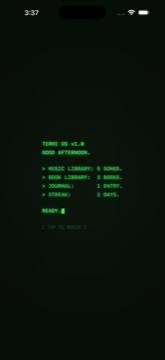
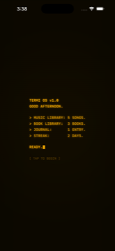
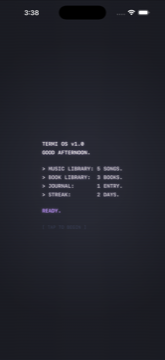
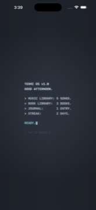
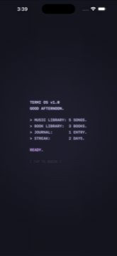
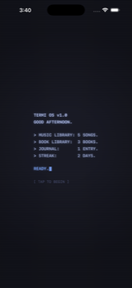
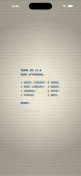
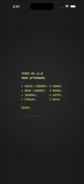

A terminal for your music, your books, and your words — one app, three pillars, zero accounts.
Most apps make you choose: a music player, a reading app, a notes app. Termi is one session — music plays underneath while you read or write, and none of it asks you to leave.
Your own library, played back with a real reactive visualizer, generative album art, and a scrobbling option you control.
A custom EPUB reader built from scratch — no web-view rendering, real terminal-styled typography, reading stats that actually mean something.
A distraction-free editor with typewriter sounds, streaks, and word-count goals — your notes never leave the device, ever.
This is the one nobody else has. Modern apps optimize away every bit of friction until a "like" is the most intimate thing left. Termi Packages go the other way: build a mixtape from your own library, pin a quote from the book you can't stop talking about, or fold in a page of your own writing — then send it to one specific person the old-fashioned way. Device to device. No server, no account, no cloud in between.
Build a mixtape from your library, pin a quote from a book, or fold in a page of your own writing — pick the one piece of yourself you actually want them to have.
A real handshake, device to device — no AirDrop sheet, no notification that vanishes into a feed. Just the two of you, present at the same time.
It opens like it was actually meant for them. Drop a message at the exact second in the mixtape you want them to hear it — presence, not a push notification.
The aesthetic isn't decoration on top of Termi — it's half the point. Every screen renders through a real theme engine, and the visualizer is one of five distinct styles, not a single default.
Bars, Sparkline, Radial, Waterfall, Matrix Warp — pick the one that matches the song, or the mood.
Amber and green phosphor CRTs, Nord, Dracula, Catppuccin, Solarized, Gruvbox, Tokyo Night, and more — the whole app repaints, not just an accent color.








Everything you put into Termi — your music, your books, your writing, your stats — is stored locally in the app's own sandbox. The only thing that ever leaves your device is your listening history, and only if you choose to connect a Last.fm account. Full details in the privacy policy.